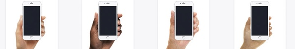

üëπ ARTSTUFF.WTF

FRI 5/25
FRI
Rebirth: Secret Guest, Muñeka, Buckmonster, Loren Kramar & more
Navel
10pm - 4am
$20/$25
Celebrate NAVEL's 4th anniversary and our relaunch as a collective in our new performance and music space with a DJ set by a secret special guest (if you know, you know), plus sets by MUñEKA (Rail Up) and BUCKMONSTER (Bubbles), a live performance by LOREN KRAMAR, a custom soundscape by JEN MONROE (Listen to This), installations by DICKO & ALEXIS BLAIR PENNEY, and more TBA.
LINK
Serenity Rave
rec center
10pm - 4am
$10/$15/$20
Asmara (Nguzunguzu, Fade To Mind), SFV Acid, Bianca Lexis (Dublab), One Child Policy, John Bryars.
LINK

SAT 5/26
SGV dumpling tour
meets 5803 N Figueroa
11am - 5pm
$20
Explore Alhambra, SGV and Highland Park's best dumpling spots. Guided by Bicycle Culture Institute and L.A. Bike Trains. Total of 5 food stops, biking 25 miles at an easy pace.
LINK
SUN 5/27
L.A. Zine Fest 2018
Pasadena Convention Center
11am - 6pm
FREE
This year's Fest will feature 200 zinesters, writers, illustrators, comix creators, photographers, and more—selling, trading and sharing their work, and celebrating self-publishing and DIY culture in the community. ~ ALSO FEATURING ~ READINGS, TALKS, WORKSHOPS, ZINE LIBRARIES, WONDERSPACE (free, hands-on activities), PLAYDATE (independent games), F.L.O.W ANTENAMÓVIL, EXHIBITOR ART curated by Pengu Labs, PHOTO BOOTH by The Kitty Cult, INCREDIBLE VOLUNTEERS, ZINES! ZINES! ZINES!
LINK
The Future Left Reading Group: Inventing The Future
Universal Research Group
2pm
FREE
Inventing The Future is a landmark work of contemporary social and political commentary that has, since its publication in 2015, reset the course of activism on the Left and inspired a wave of futureward political organizing— our own group, The Future Left, among them. Srnicek and Williams challenge the effectiveness of hyperlocalized “folks politics” for tackling complex, global issues, such as climate change, multinational capitalism, rapid technological innovation, or the erosion of the nation-state. They also explain the limitations of any horizontal politics, of the kind we saw during #OccupyWallStreet, that takes “resistance” as its primary strategy.
LINK
Dog Dream closing party
Navel
8pm
$5 suggested
Come celebrate the closing of Nina Sarnelle's Dog Dream exhibition. Performance / Comedy / Poetry / Music by: Patrick Ballard, Tashi Condelee, Brennan Hill, Ann Hirsch, Christina Catherine Martinez, Nina Sarnelle
LINK
Mark Hosler and Wobbly from Negativland Everything Is Terrible
Coaxial
8pm
$12/$15
Mark Hosler and WOBBLY / Jon Leidecker from Negativland will each perform solo sets and a collaboration set with special guest Everything Is Terrible! Coaxial is also honored to have The Swinging Chandeliers opening the night, consisting of a artist/hypnotist, tape loops.
LINK
ABOUT
ARTSTUFF.WTF is a minimal website listing page for selected mostly DIY art (and etc) events going on around Los Angeles. It is a personal list of 5 - 10 events sent out to friends weekly, and made available online here for bookmarking and quick reference. There is an archive of past listings. Sign up to receive weekly emails. Made by Lee Tusman.